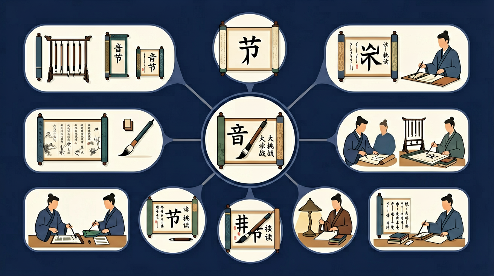

🌍 And（已知）：我们已经有了一定的基础知识
⚡ But（问题）：但还有一个重要概念需要深入理解
💡 Therefore（新知）：因此通过本节课的学习，我们将掌握新知识并能灵活运用
声母+韵母+声调，三步拼出音节！

一个汉字的读音就是一个音节！👇
两种不同的拼法，学会就能读任何音节！
只有声母和韵母，一下子拼起来！
有介母 i/u/ü 在中间，分三步拼！
这些音节不用拼，直接读出来！
快速判断音节结构，考验真功夫！
回忆：今天学了哪些关键词和规则？试着说出来。
用自己的话解释今天学的核心概念，不看书能说清楚吗？
用今天的知识解决一个实际问题，或写一个新例子。
把今天的知识与已有知识联系起来：有什么共同点？有什么区别？能不能自己创造一道新题？
先独立作答，再点选项查看对错与错因。
下面哪个词语的拼音是'huā duǒ'？
下面哪个词语的拼音是'xiǎo niǎo'？
下面哪个词语的拼音是'yuè liang'？
请根据拼音'qīng wā'填写正确的词语：____。
答案：青蛙
'qīng wā'对应的正确词语是'青蛙'。
请根据拼音'bái yún'填写正确的词语：____。
答案：白云
'bái yún'对应的正确词语是'白云'。
下面哪个词语的拼音声调是正确的？
请选择一组多音节词语，尝试拼读并记录下每个音节的声调。
❓ 为什么‘苹果’要拼成‘píng guǒ’而不是‘pín guǒ’？
❓ 遇到‘xiong’这样的音节该怎么拆开读？
❓ 三拼法里‘u’和‘i’同时出现时谁先读？
学完这一课，这些问题你都能自信地回答。
🎯 能说出汉语音节的声母、韵母和声调组成
🎯 能判断两拼法与三拼法的适用条件
🎯 能分析易混淆音节（如iu/ui）的拼读规律
一个汉语音节一般由哪几部分组成？
像拆积木一样分离声母、介母、韵母（如‘q-i-áng→qiáng’）
声母是音节开头，韵母是核心，声调是帽子
两拼法像直梯（声母+韵母），三拼法像转弯滑梯（声母+介母+韵母）
用颜色标记音节部件（红色声母/蓝色介母/绿色韵母）
用姓名拼读验证规则（如‘李雷→L-i Léi’）
✅ ü见jqx，两点定要擦（→ju/qu/xu）
💡 混淆拼音规则与字母书写
✅ 做‘音节拉伸操’（h-u-ā→huā）
💡 介母发音短促易忽略
口诀：声母在前韵母后，介母中间不要漏，声调帽子戴对头
类比：拼音节就像做汉堡：声母是面包底，韵母是肉饼，声调是酱料
And：学生已掌握拼音字母发音
But：不清楚如何将字母组合成音节
Therefore：建立音节是拼音基础单位的认知
音节就像拼音小火车，由声母和韵母车厢组成。比如'bā'这个音节，车头是声母'b'，车厢是韵母'ā'，合起来就能发出'巴'的音。特别注意：一个汉字对应一个音节，像'妈妈'就是'mā'和'mā'两个音节组成的。
🌍 找找身边单音节词：门（mén）、灯（dēng）、书（shū）；多音节词：西瓜（xī guā）有2节，巧克力（qiǎo kè lì）有3节。
下面哪个是完整音节？
And：能分辨声母韵母
But：拼读时容易断开读
Therefore：掌握声韵快速滑动技巧
两拼法就像滑滑梯：声母当起点（如d），韵母当滑道（如à），快速滑下去变成'dà'。秘诀是'前音轻短后音重'！练习'd+ǎ→dǎ打'时，想象'd'轻轻碰一下舌头就马上滑向'ǎ'。错误示范：把'd-à'读成'的-啊'就断开了。
🌍 玩拼音闪电战：看到路牌'学校（xué xiào）'，用两拼法快速读——x+ié→xié，x+iào→xiào。
正确拼读't+ú'的结果是？
And：掌握两拼音节
But：遇到介母就卡壳
Therefore：理解介母的桥梁作用
三拼法多了介母这个'小桥'，记住口诀'声轻介快韵母响'。比如'火huǒ'：先读声母'h'（轻），马上接介母'u'（快），最后滑向韵母'ǒ'（响）。注意：介母只有i/u/ü三个，像'家jiā'里的'i'就是介母。错误例子：把'q+i+án→qián'读成'qī-án'就丢掉了介母。
🌍 超市大发现：三拼词超多！'酸奶suān nǎi'（s+u+ān）、'巧克力qiǎo kè lì'（q+i+ǎo）。
'小xiǎo'的正确拆分是？
And：能拼普通音节
But：遇到特殊规则易错
Therefore：攻克ü上两点省略规则
小ü见到j/q/x/y要脱帽行礼！记住：'jú子'写作'jú'但读作'ǘ'，因为ü遇到j要去两点。但ü遇到n/l要保持两点，比如'nǚ女孩'。数字记忆法：j/q/x/y这4个字母会让ü去掉两点。例子：'x+ǜ→xù'（序），但'l+ǜ→lǜ'（绿）。
🌍 动物名称练一练：'鲸jīng'（普通拼）、'鱼yú'（ü去两点）、'驴lǘ'（ü保留两点）。
下面哪个写法正确？